01
1950 — PRESENTE
FERRARI
THE PRANCING HORSE↗
Carregando notícias...
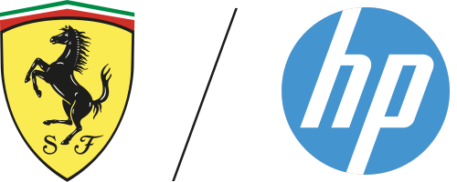
SCUDERIA FERRARI HP
Conheça a dupla que representa a Ferrari na Formula 1.
A Ferrari é a equipe mais icônica e tradicional da história da Fórmula 1. Fundada por Enzo Ferrari e presente desde a primeira temporada do campeonato em 1950, a escuderia se tornou símbolo de velocidade, paixão e tradição no automobilismo.
Ao longo das décadas, a Ferrari construiu uma trajetória lendária com pilotos históricos como Michael Schumacher, Niki Lauda e Gilles Villeneuve. Nos anos 2000, viveu uma de suas maiores eras dominantes, conquistando múltiplos títulos mundiais consecutivos com Schumacher e se tornando referência absoluta na Fórmula 1.
Mesmo enfrentando períodos de reconstrução e forte concorrência, a Ferrari continua sendo uma das equipes mais populares e respeitadas do grid. Com sua combinação de história, inovação e paixão italiana, a escuderia segue em busca de retornar ao topo da Fórmula 1.

A Ferrari representa mais do que velocidade — representa tradição, emoção e legado. Desde sua estreia na Fórmula 1, a Scuderia construiu uma identidade baseada em paixão absoluta pelo automobilismo. Em Maranello, cada detalhe carrega história, e cada corrida é tratada como parte de uma herança que atravessa gerações.
Competir pela Ferrari significa lidar com expectativas gigantescas. A equipe vive sob atenção constante do mundo inteiro, mas transforma essa pressão em motivação. Cada integrante entende que defender o vermelho da Ferrari é representar décadas de história e milhões de torcedores apaixonados.
Nenhuma equipe possui uma história tão rica quanto a Ferrari. Seu legado foi construído por campeões lendários, carros icônicos e momentos eternos da Fórmula 1.
A Ferrari corre movida por emoção. Cada vitória é celebrada como um evento histórico e cada derrota aumenta ainda mais o desejo de retornar ao topo.
A equipe mistura engenharia de ponta com design e tradição italiana, criando carros que unem beleza, inovação e performance em um único símbolo.
A Ferrari não é apenas uma equipe — é um símbolo do automobilismo mundial. Sua essência está na combinação de tradição, paixão e busca eterna pela glória. Em cada era, a Ferrari corre para transformar emoção em história.
Em Maranello, vive a alma da Ferrari. Mais do que uma simples fábrica, o complexo da Scuderia representa décadas de história, velocidade e obsessão pela perfeição. Cada detalhe carrega o peso de um legado construído desde os primeiros dias da Fórmula 1.
Antes de cada corrida, milhares de horas são dedicadas ao desenvolvimento aerodinâmico, simulações e ajustes extremos. Na Ferrari, performance não é apenas um objetivo — é tradição.
A Ferrari é a equipe mais icônica da Fórmula 1. Cada projeto nasce carregando décadas de conquistas, rivalidades históricas e uma conexão única com os fãs ao redor do mundo.
Em Maranello, design e performance caminham juntos. A equipe busca unir beleza, eficiência aerodinâmica e velocidade em cada detalhe do carro.
Na Ferrari, competir significa lutar pelo topo. A expectativa da torcida, da história e da própria equipe cria uma cultura intensa onde vencer é parte da identidade.
“A Ferrari não corre apenas por vitórias. Corre por eternidade.”
O verdadeiro poder da Ferrari nasce em Maranello. Um lugar onde tradição encontra tecnologia, e onde cada detalhe é construído para manter viva a equipe mais lendária da Fórmula 1.
Das origens à atual Ferrari na Fórmula 1.
| 🏎️ Chassi Atual | SF-26 |
| ⚙️ Motor Atual | Ferrari |
| 📅 Fundação | 1950 |
| 📍 Sede | Maranello – Italia |
| 🥇 Primeiro Campeão | Alberti Ascari🇮🇹 – 1952 |
| 🏆 Último Campeão | Felipe Massa 🇧🇷 – 2008 |
| 👑 Maior Campeão | Michael Schumacher🇩🇪 7x |
| 🔥 Melhor Temporada | 2004 – 15 vitórias em 18 corridas |
| 👬 Dupla Atual | Hamilton 🇬🇧 Lecrerc 🇲🇨 |
Posição campeonato
Pontos
Pódios
Vitórias
Top 5
Avg Grid
| Etapa | GP | Leclerc | Hamilton |
|---|
Ferrari 2026
Ferrari
Formula 1 championship points evolution
As principais figuras responsáveis pela direção, engenharia e desempenho da Scuderia.
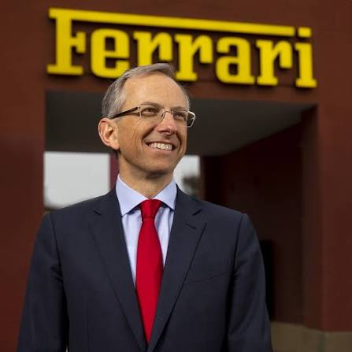
Responsável pela direção executiva e comercial da Ferrari.
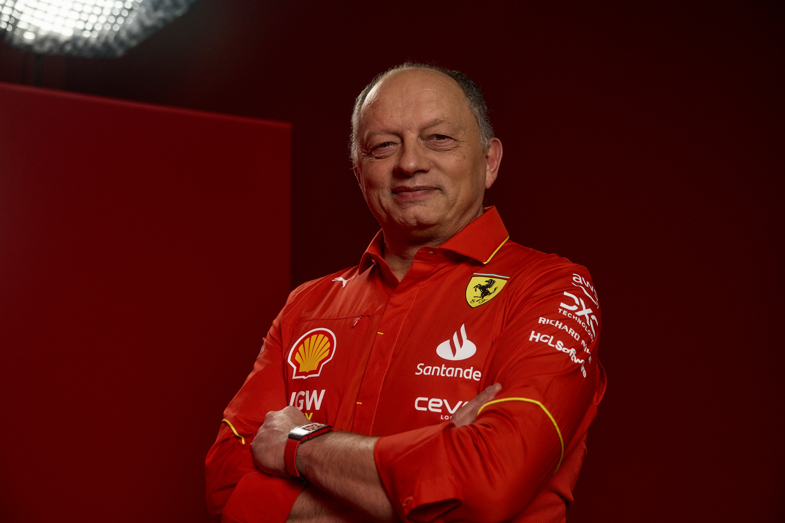
Responsável pelas decisões esportivas, estratégicas e pela gestão da equipe.
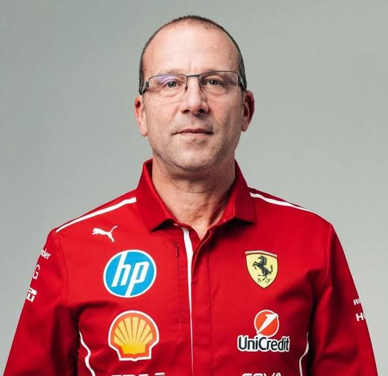
Atua no desenvolvimento técnico e na área de performance da equipe.
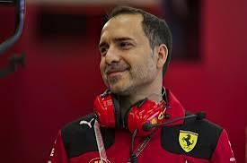
Coordena o desenvolvimento aerodinâmico do carro.
Coordena o conceito e o design do carro da Ferrari.
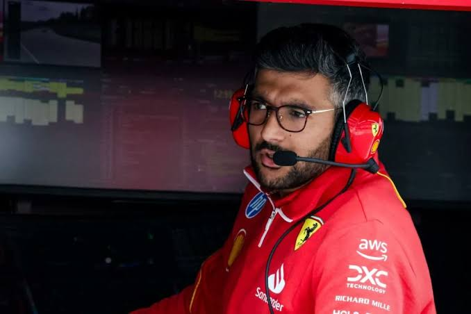
Coordena as estratégias da equipe durante os finais de semana de corrida.
Grupo responsável pela coordenação das áreas de engenharia da equipe.
Na Ferrari, cada detalhe carrega décadas de tradição e pressão por vitória. De Maranello até os circuitos ao redor do mundo, diferentes setores trabalham juntos para transformar paixão italiana em performance absoluta dentro da Fórmula 1.
Representam o peso histórico da Ferrari dentro da pista, guiando no limite enquanto carregam a expectativa de milhões de fãs.
Trabalham no desenvolvimento constante do carro através de testes virtuais, ajustes aerodinâmicos e análise de comportamento.
Busca extrair cada milésimo possível do carro através de ajustes finos em aerodinâmica, pneus e equilíbrio.
Responsável pelas decisões estratégicas durante os GPs, analisando desgaste, ritmo e oportunidades em tempo real.
Desenvolve soluções sofisticadas para gerar eficiência máxima em curvas e estabilidade em alta velocidade.
Executam pit stops precisos e trabalham sob extrema pressão para manter o carro competitivo durante toda a temporada.
Analisa cenários de corrida constantemente para encontrar oportunidades e maximizar o resultado da equipe.
Monitora milhares de informações em tempo real para entender o comportamento do carro e dos pneus.
Trabalha na criação de novas soluções técnicas para manter a Ferrari competitiva diante da evolução constante da Fórmula 1.
Sistemas avançados ajudam na simulação, análise de dados e tomada de decisões rápidas durante as corridas.
Coordena o transporte de carros, peças e equipamentos para diferentes países ao longo da temporada.
Mantém viva a conexão global entre Ferrari e tifosi, fortalecendo a imagem da equipe mais histórica da Fórmula 1.
Em Maranello, cada Ferrari nasce da combinação entre tradição, engenharia italiana e obsessão por velocidade. O desenvolvimento de um carro da Scuderia envolve milhares de horas de simulações, testes e refinamentos para transformar paixão em performance absoluta.
Tudo começa com estudos aerodinâmicos e ideias que buscam equilíbrio entre velocidade, estabilidade e eficiência.
Engenheiros utilizam softwares avançados para criar modelos virtuais e testar centenas de possibilidades antes da fabricação.
A aerodinâmica é refinada milimetricamente para gerar downforce eficiente sem comprometer a velocidade nas retas.
Materiais leves e resistentes são utilizados para criar uma estrutura capaz de suportar forças extremas durante as corridas.
Os pilotos trabalham junto aos engenheiros no simulador para ajustar comportamento, equilíbrio e resposta do carro.
Durante toda a temporada, a Ferrari desenvolve atualizações constantes buscando reduzir cada milésimo de segundo.
“Em Maranello, cada detalhe existe por um único motivo: vencer.”
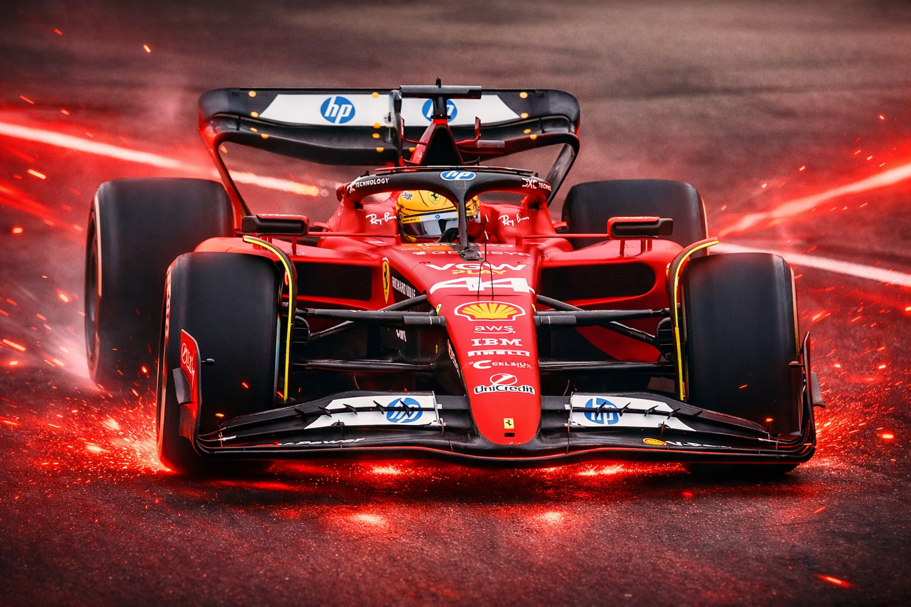
🏁 Corridas
🥇 Vitórias
⚡ Poles
🥉 Pódios
📈 Pontos no Total
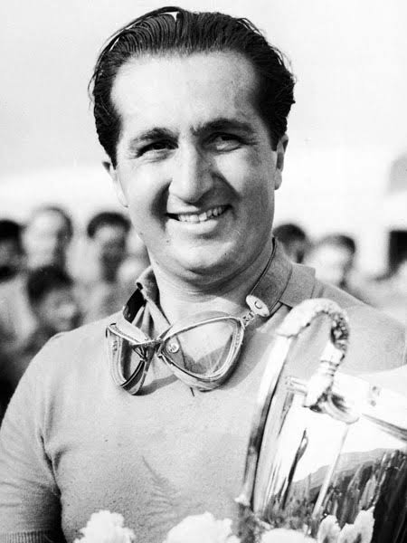
🇮🇹 Ascari
1°🏆🇮🇹 Ascari
2°🏆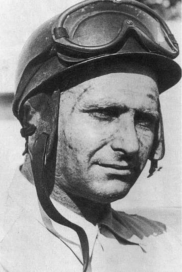
🇦🇷 Fangio
4°🏆🇬🇧 Hawthorn
1°🏆
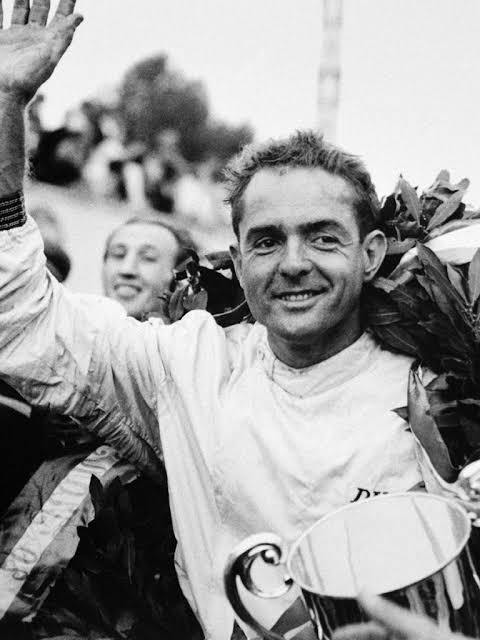
🇺🇸 Phil Hill
1°🏆🇬🇧 Surtees
1°🏆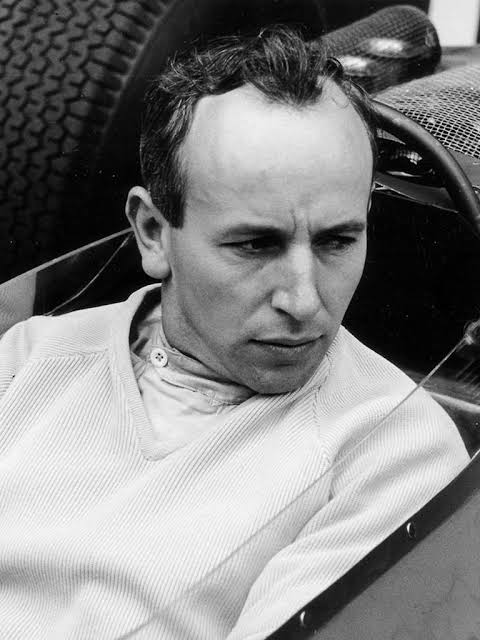
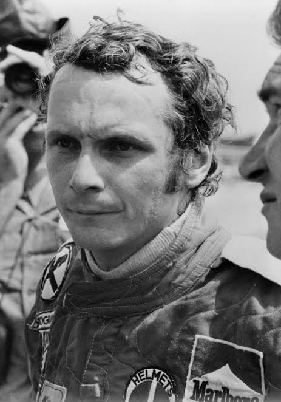
🇦🇹 Lauda
1°🏆🇦🇹 Lauda
2°🏆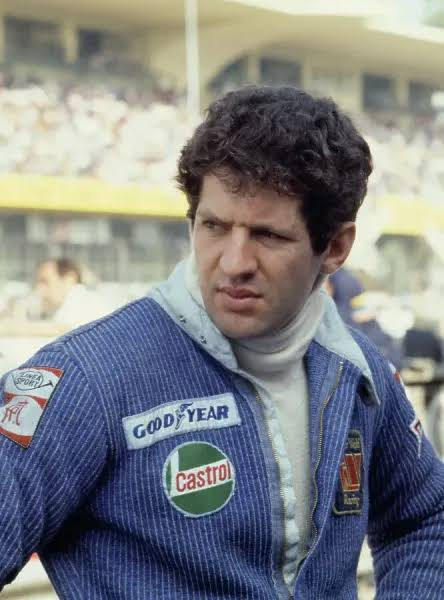
🇿🇦 Scheckter
1°🏆🇩🇪 Schumacher
3°🏆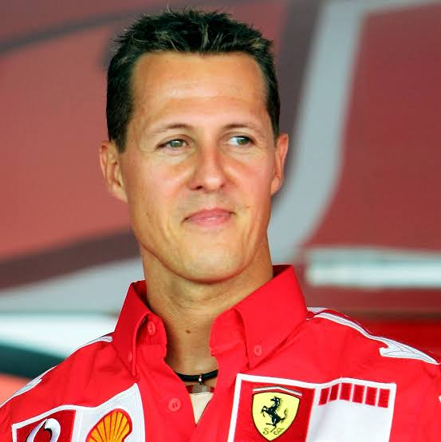
🇩🇪 Schumacher
4°🏆🇩🇪 Schumacher
5° 🏆🇩🇪 Schumacher
6° 🏆🇩🇪 Schumacher
7° 🏆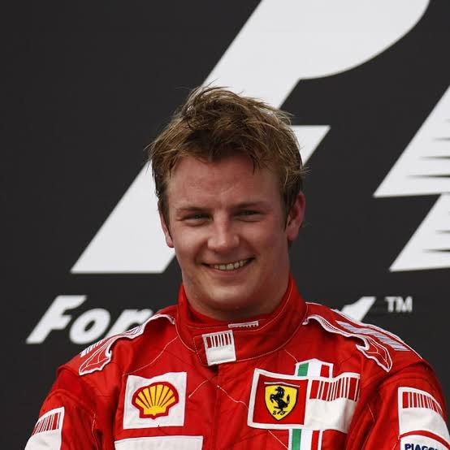
🇫🇮 Räikkönen
1° 🏆Hill
von Trips
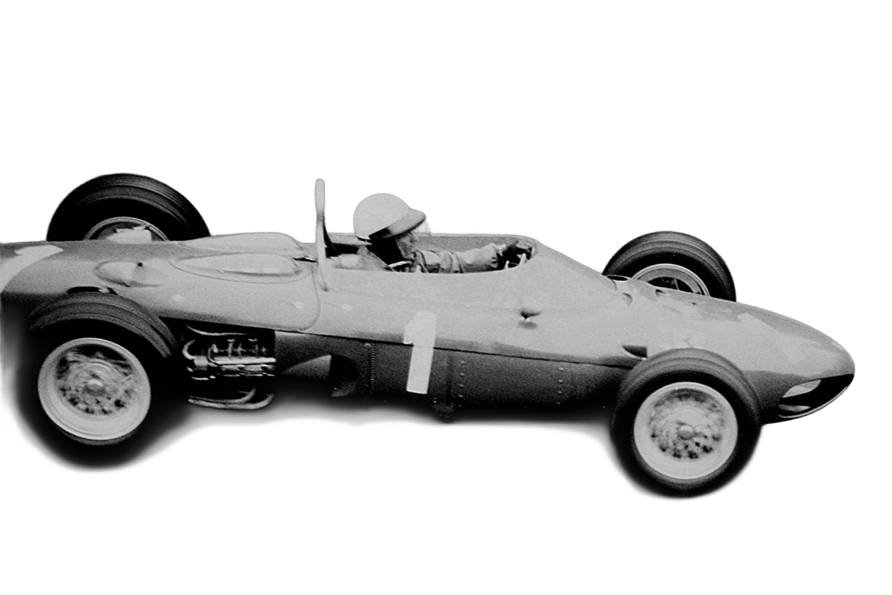
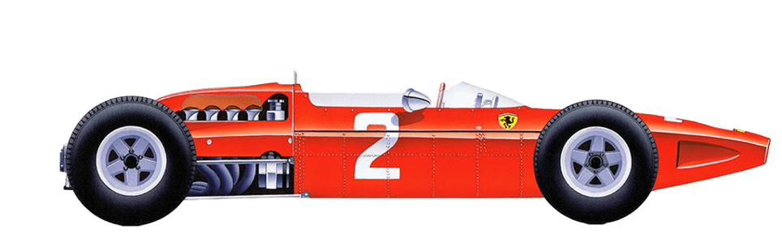
Surtees
Bandini
Lauda
Regazzoni
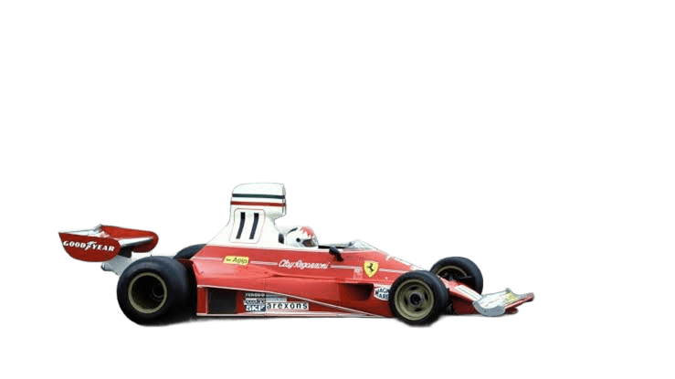
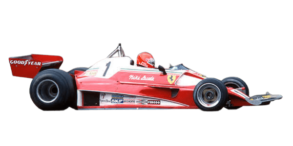
Lauda
Regazzoni
Lauda
Reutemann
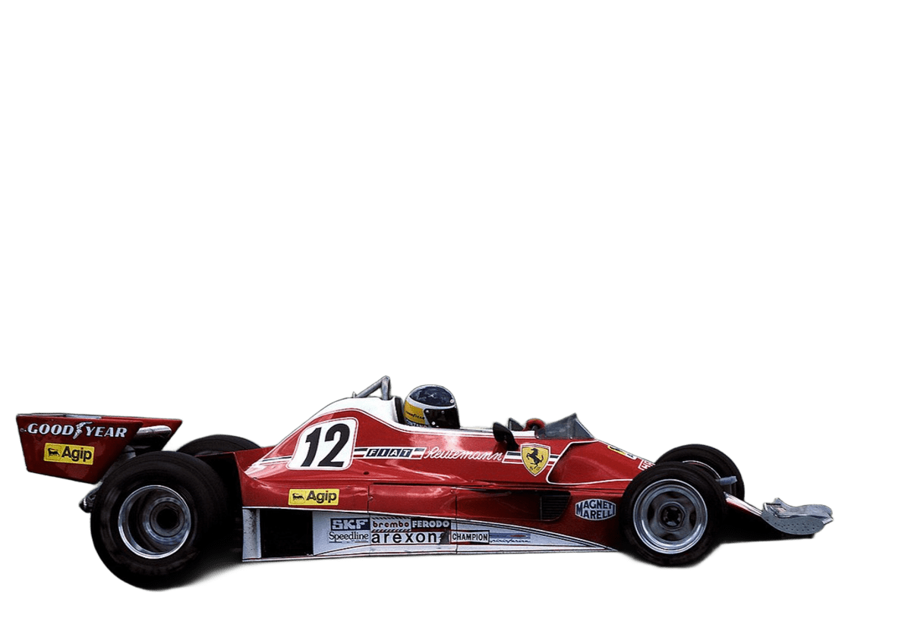
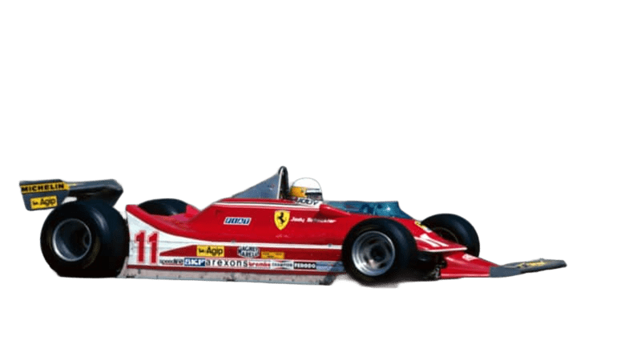
Scheckter
Villeneuve
Pironi
Villeneuve
Tambay
Arnoux
Schumacher
Irvine
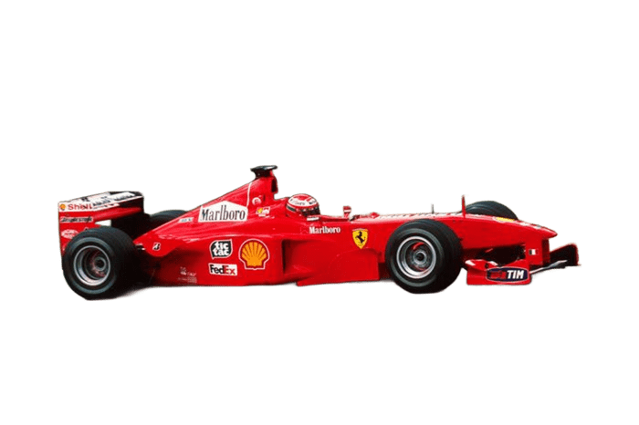
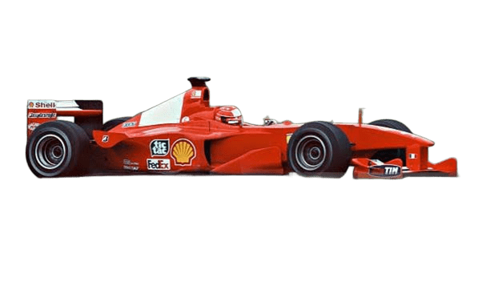
Schumacher
Barrichello
Schumacher
Barrichello
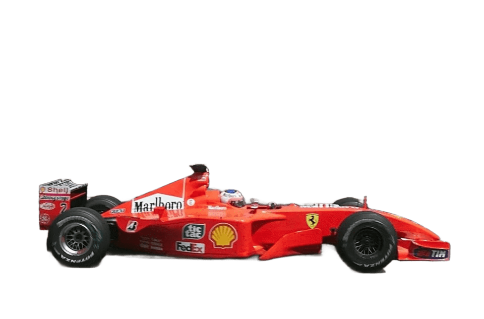
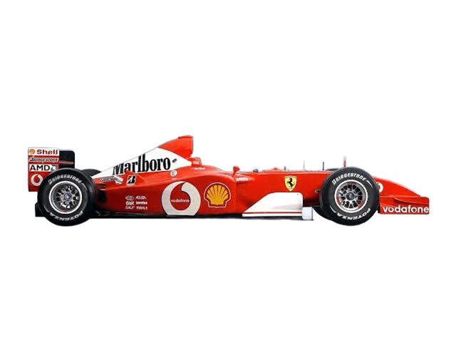
Schumacher
Barrichello
Schumacher
Barrichello
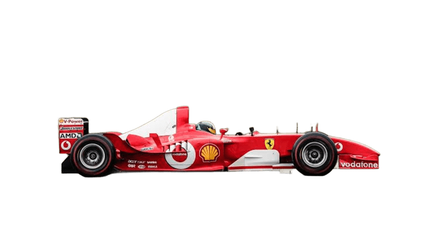
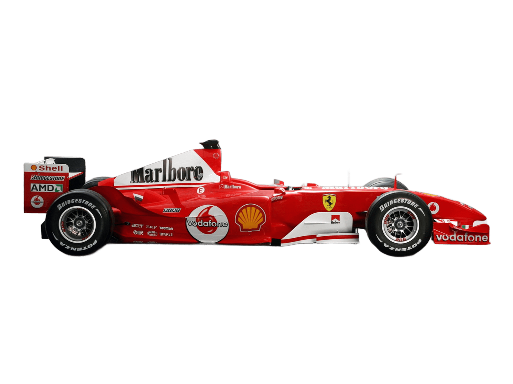
Schumacher
Barrichello
Räikkönen
Massa
.png)
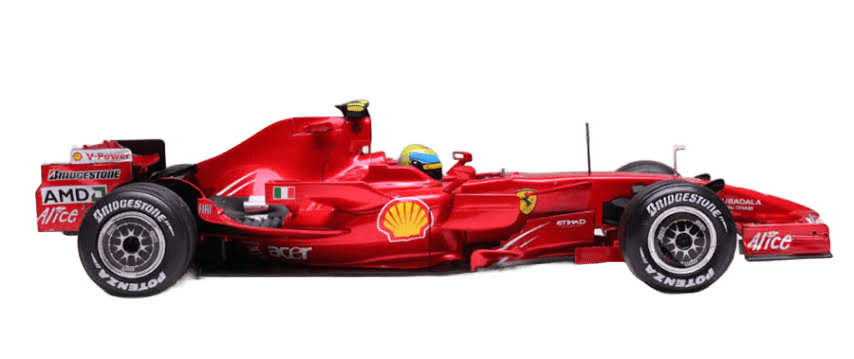
Räikkönen
Massa

O maior símbolo da era dominante da Ferrari nos anos 2000
Liderou a Ferrari em uma das eras mais intensas da Fórmula 1
Primeiro bicampeão da história da Ferrari

Ícone eterno da paixão e agressividade da Ferrari

Último campeão mundial da Ferrari na Fórmula 1

Levou a Ferrari ao limite em temporadas históricas e quase conquistou o título mundial.

Um dos pilotos mais amados da Ferrari e protagonista da dramática temporada de 2008.

Fundamental na reconstrução da Ferrari campeã ao lado de Schumacher.

O rosto da nova geração da Ferrari e um dos pilotos mais talentosos da era moderna